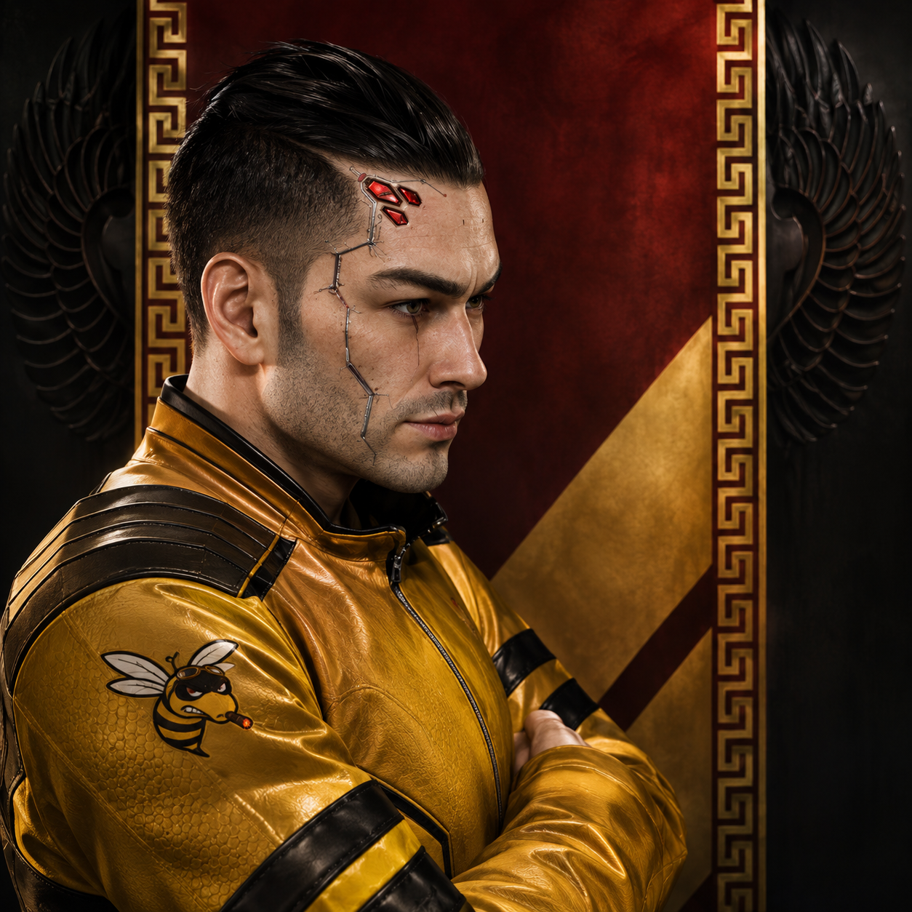
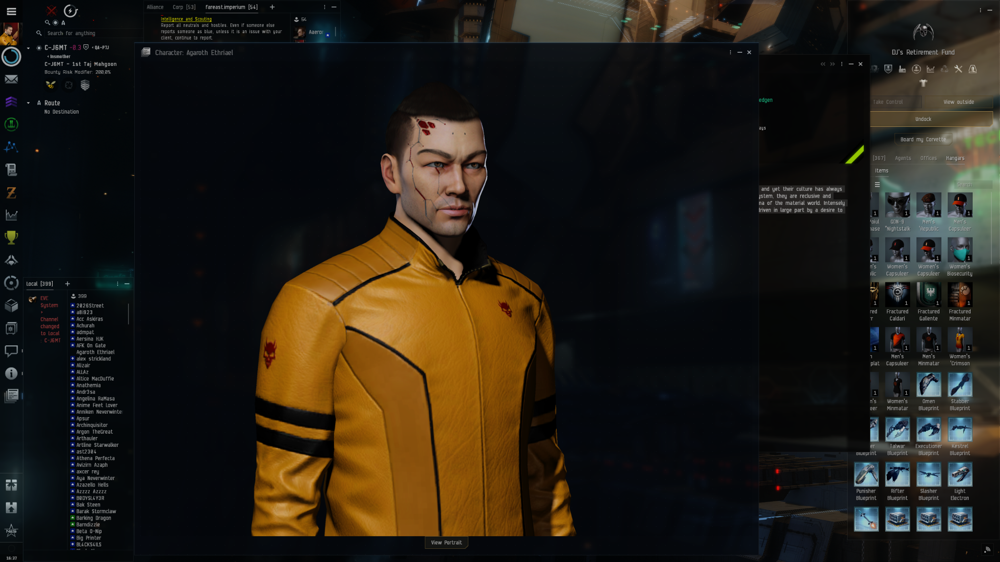

AGAROTH
ETHRIAEL
The Old Wolf of New Eden
He has seen New Eden change. His allegiance has not.
Capsuleer since YC106. A veteran of Goonswarm Federation and the Imperium.
AchuraGoonswarm FederationImperium
Biography
Agaroth Ethriael has been a capsuleer since YC106. Over more than two decades in New Eden, he has remained associated with Goonswarm Federation and the Imperium.
His history is one of long service, shared campaigns and the bonds formed among comrades. His loyalty is not presented as a matter of convenience or ambition, but as something shaped through years of standing alongside the same alliance.
Known by the title Goonswarm Federation's Wrath Dredgen, bestowed by The Mittani, Agaroth also carries an Alliance Tournament victory medal among his historical recognitions.
He has seen New Eden change. His allegiance has not. For the Swarm. For the Imperium.
Origins & bloodline
Agaroth is Achura, a Caldari bloodline originating from the Saisio system. His Achura heritage is part of his capsuleer identity; his personal history, however, has been shaped by decades of life among the stars and his allegiance to the Imperium.
Military record
This archive will document verified titles, medals, campaign memories, fleet records and ships as additional material is added. The records shown here are intentionally limited to details currently documented by the capsuleer.
Capsuleer career begins
Agaroth enters New Eden during its early capsuleer era.
Long-standing allegiance
His identity becomes closely associated with Goonswarm Federation and the Imperium.
Historical recognition
Wrath Dredgen title and an Alliance Tournament victory medal are part of his record.
The veteran in New Eden
Original in-game material and a cinematic character portrait.
